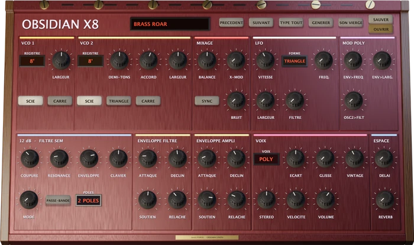
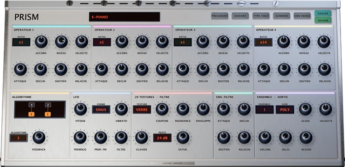

Le catalogue
Les 8 plug-ins : synthés
 NEREIDSynthétiseur à faders · filtre 24 dBSynthés
NEREIDSynthétiseur à faders · filtre 24 dBSynthés NIMBUSSynthétiseur de textures · 3 moteurs, enregistreur d'entréeSynthés
NIMBUSSynthétiseur de textures · 3 moteurs, enregistreur d'entréeSynthés
OBSIDIANSynthétiseur polyphonique 8 voix · filtre à variable d'étatSynthés ORGANONSynthétiseur à modélisation physique · instruments du monde entierSynthés
ORGANONSynthétiseur à modélisation physique · instruments du monde entierSynthés
PRISMSynthétiseur FM · 4 opérateurs, 8 algorithmesSynthés TITANSynthétiseur polyphonique bicanal · 8 voix · huit macrosSynthés
TITANSynthétiseur polyphonique bicanal · 8 voix · huit macrosSynthés FLUXSynthé d’effets spéciaux · matière solide, liquide, gazeuseSynthés
FLUXSynthé d’effets spéciaux · matière solide, liquide, gazeuseSynthés TETRAPetit synthé · quatre macros chaotiquesSynthés
TETRAPetit synthé · quatre macros chaotiquesSynthés